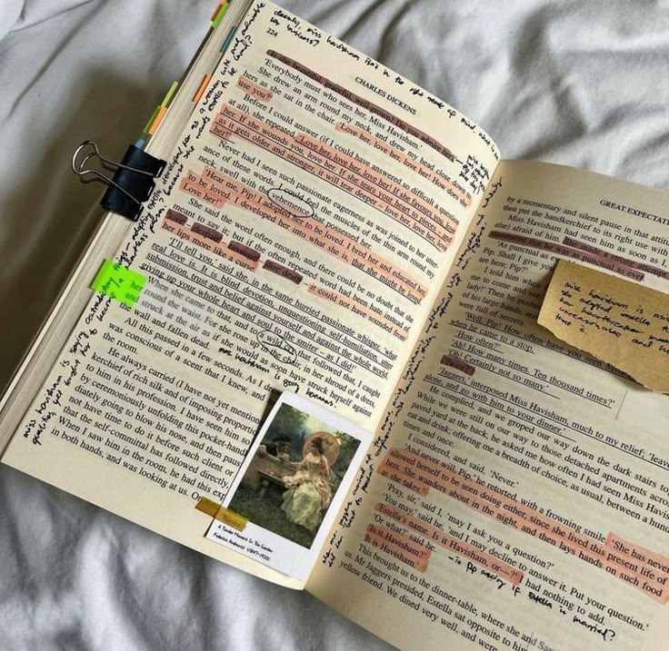

Fantasia
Percy Jackson e o Ladrão de Raios
Rick Riordan
Percy descobre que é filho de um deus grego e embarca em uma missão para impedir uma guerra no Olimpo.
Explore novos mundos, organize suas leituras e encontre sua próxima história favorita!
O BookShelf do seu jeito. Escolha uma cor e alterne entre modo claro e escuro.
CATÁLOGO DA ESTANTE
Histórias incríveis para descobrir e adicionar à sua lista.
Rick Riordan
Percy descobre que é filho de um deus grego e embarca em uma missão para impedir uma guerra no Olimpo.
Itamar Vieira Junior
No sertão da Bahia, duas irmãs descobrem segredos de família enquanto enfrentam conflitos ligados à terra.
Agatha Christie
Dez estranhos são atraídos para uma ilha isolada onde uma voz misteriosa os confronta com crimes do passado e mortes inexplicáveis começam a ocorrer.
Aldous Huxley
Um mundo de pessoas programadas em laboratório, e adestradas para cumprir seu papel numa sociedade de castas biologicamente definidas já no nascimento.
Gabriel García Márquez
A história de várias gerações da família Buendía na cidade fictícia de Macondo.
Alex Michaelides
Uma pintora deixa de falar depois de um crime, e um terapeuta tenta descobrir o que aconteceu.
J. R. R. Tolkien
Bilbo Bolseiro deixa o conforto de casa para viver uma aventura com um grupo de anões.
Yuval Noah Harari
Uma viagem pela história da humanidade e pelas transformações das sociedades ao longo do tempo.
Jane Austen
Elizabeth Bennet e o senhor Darcy precisam superar diferenças, julgamentos e expectativas sociais.
Selecione uma categoria para filtrar o catálogo.
Adicione livros, altere o status quando quiser e acompanhe seu progresso.
Defina quantos livros deseja ler nos próximos seis meses. Sua estante atualiza o progresso automaticamente.
Quatro ideias simples para aproveitar mais cada livro — sem pressa e sem transformar a leitura em obrigação.
Escolha um lugar confortável e com boa iluminação. Deixe seu livro à mão para facilitar o início de cada sessão.
Separe 10 ou 15 minutos do seu dia. Ler um pouco com frequência pode ser mais fácil do que esperar o momento perfeito.

Anote uma frase, um personagem ou algo que fez você pensar. Suas observações ajudam a lembrar cada história.
Silencie notificações por alguns minutos e mergulhe nas páginas. Não importa a velocidade: aproveite a experiência.
Tire suas dúvidas sobre o uso do BookShelf.
Use o botão + em um card do catálogo ou digite um título na seção Minha estante.
Clique em uma das seis categorias na área Gêneros; o catálogo mostrará apenas os títulos da categoria.
Sim. Preencha o formulário de recomendação. A validação aparece na página, mas os dados não são enviados a um servidor.
Preencha o formulário e pratique o hábito de compartilhar boas histórias.